本文主要介绍JDBC的使用方法，几个比较经典的连接Oracle数据库的例子。
第五课. JDBC初步_1
内容概要：
- Java Database Connectivity
- JDBC简介
- SQL语言回顾
- JDBC基础编程
- JDBC高级编程
- DataSource and RowSet
最早的数据库编程：
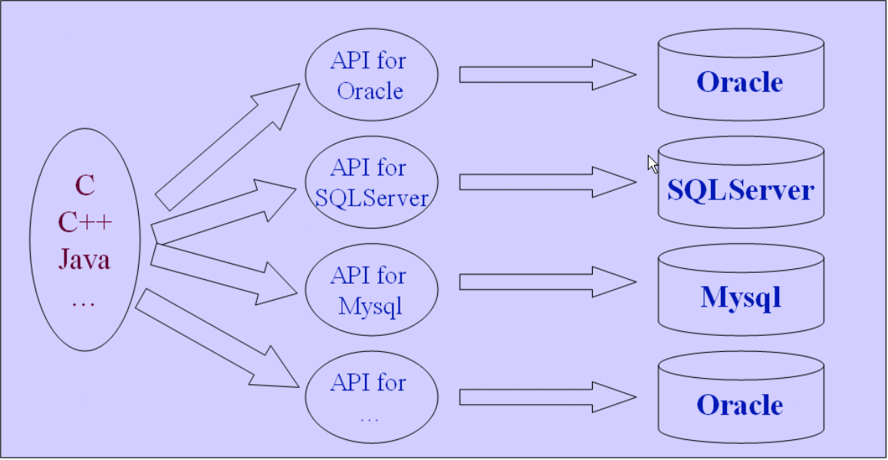
缺点：不能跨数据库平台。
解决方法：
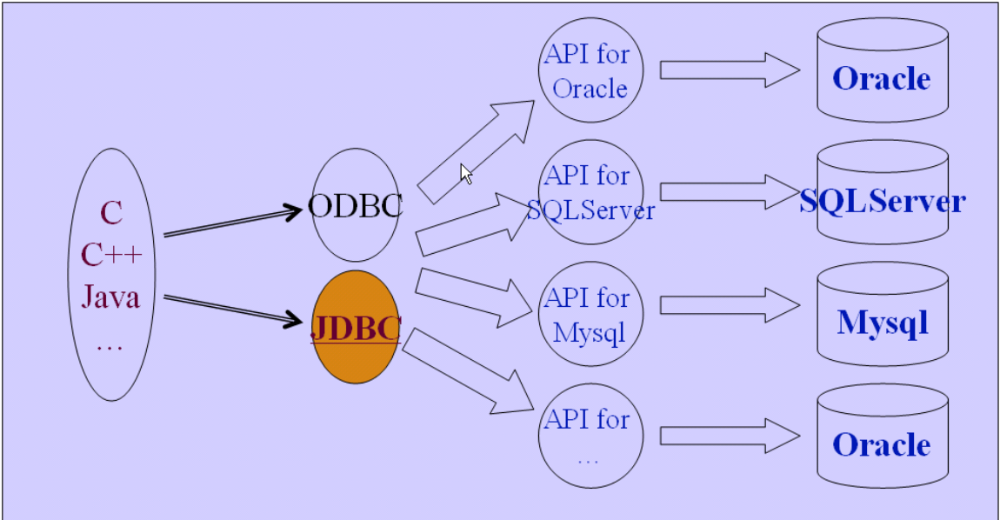
将数据库系统分层，这样就可以实现跨数据库平台了
我们的JDBC：
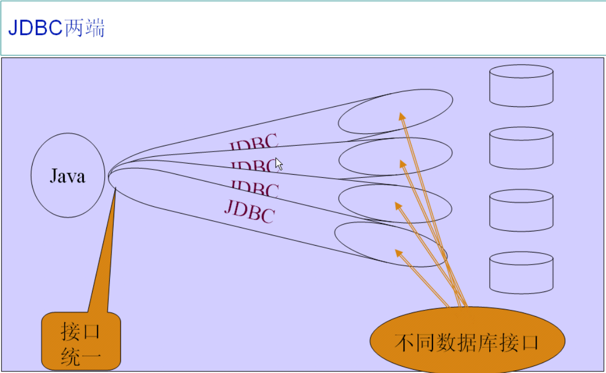
SQL语言回顾：
Select
- Select * from T where ……
Insert
- Insert into T values(……)
Create
- Create table T(……)
Delete
- Delete from T where ……
Update
- Update T set t1=… and t2=… where t3=…
Drop
- Drop table T
JDBC编程步骤（完全固定的）
- Load thd Driver
(1) Class.forName()|Class.forName().newInstance()|new DriverName()
(2) 实例化时自动向DriverManager注册，不需要显示调用DriverManager.registerDriver方法 - Connect to the DataBase
- DriverManager.getConnection()
- Execute the SQL
(1) Connection.CreateStatement()
(2) Statement.executeQuery()
(3) Statement.excuteUpdate() - Retrive the result data
(1) 循环取得结果 while(rs.next()) - Show the result data
(1)将数据库中的各种类型转换为Java中的类型(getXXX)方法 - Close
(1) close the resultset / close the statement / close the connection
来看一个例子：
首先我们在idea下创建一个JDBC工程，存放将来所有的关于JDBC的程序。再创建一个TestJDBC的module，在里面创建一个TestJDBC的class。
之后我们要连接oracle，所以在oracle的安装目录下找到JDBC的驱动:D:\app\korson\product\11.2.0\dbhome_1\oui\jlib
在这个目录下找到classes12.jar，这么就是我们要找的JDBC驱动
在我们的module配置里加入这个jar包：
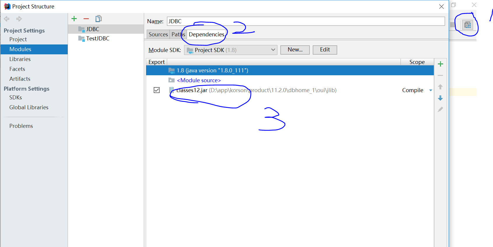
最好的方式是将classes12.jar放在自己工程下面，不要放在系统class path下面，防止和其他项目合并时产生jar包冲突。
我们在写代码之前，需要知道我们数据库的ip地址，端口号，用户名，密码。
我们这里的ip地址是127.0.0.1，端口号是1521。因为在netstat -ano下显示的127.0.0.1:1521被监听，而一般127.0.0.1是只有本地地址可以访问，0.0.0.0是外网可以访问的。
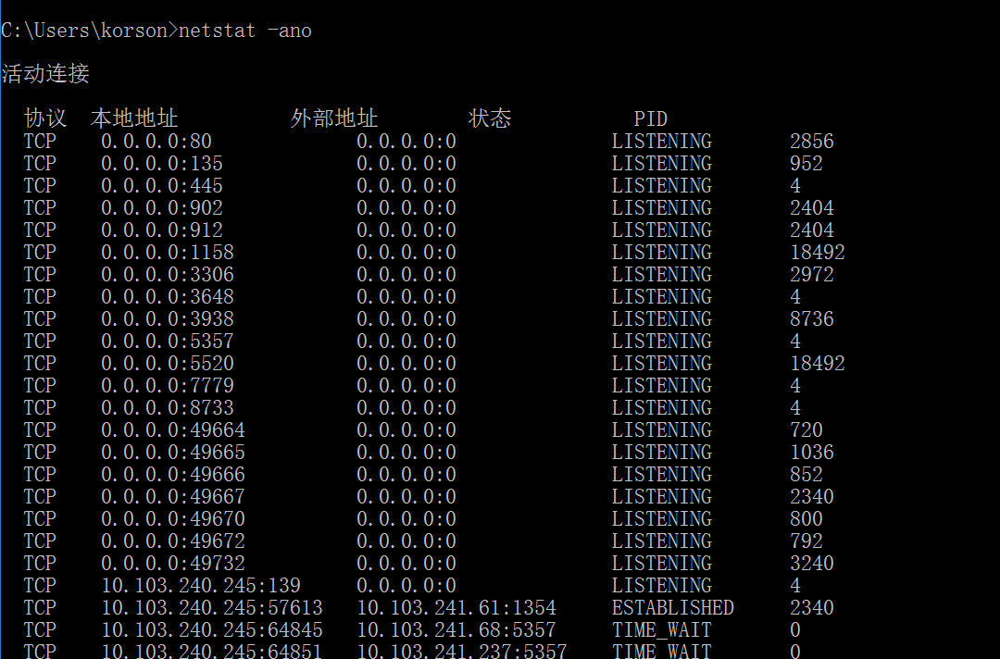
我们的代码是：
这样就连接上了名为orcl的数据库了。
第六课. JDBC初步_2
继续完善上面的代码，写出一个完整的数据库操作程序：
该程序的执行结果是从数据库的dept表中取出deptno字段进行打印，最后将各种管道关闭，后打开的先关闭。
第七课. JDBC初步_3
上面的代码有很多问题，比如数据库操作出现异常时不能正常关闭，比如rs、stmt、conn为空时会关闭等，所以加入健全的异常处理机制：
|
|
第八课. JDBC处理DML语句_1
先创建一个dept2表：
再用java代码对表进行插入数据操作：
我们在sql*plus下验证数据是否插入：
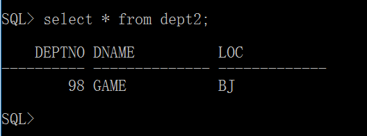
可以看到数据被成功插入了。
上面的操作比较繁琐，我们想，我们的IDE能不能集成一个看数据库内容的插件呢？
答案是肯定的。在我们的idea的View按钮上，就有可以查看数据库的一项：
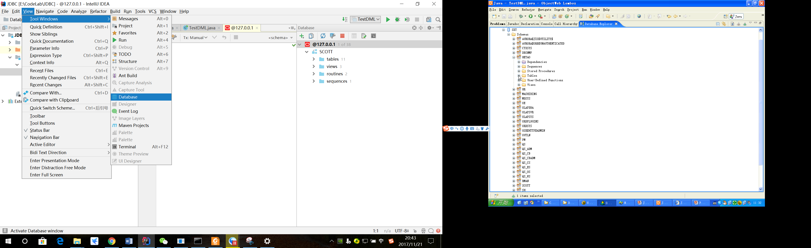
找到我们的oracle项：
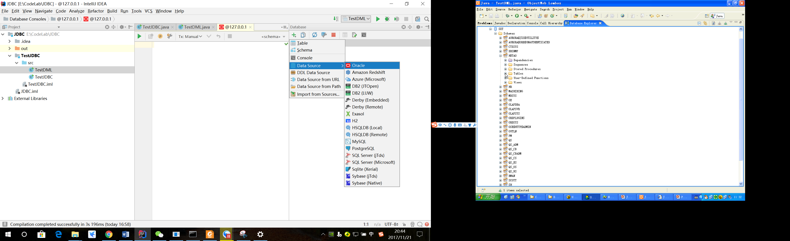
然后对我们要查看的数据库稍加配置：
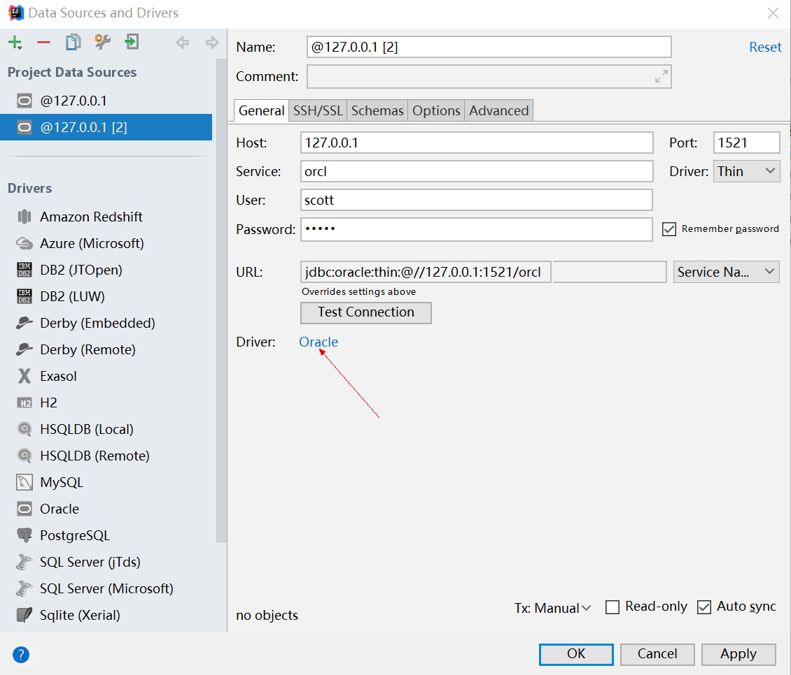
对Driver进行添加：
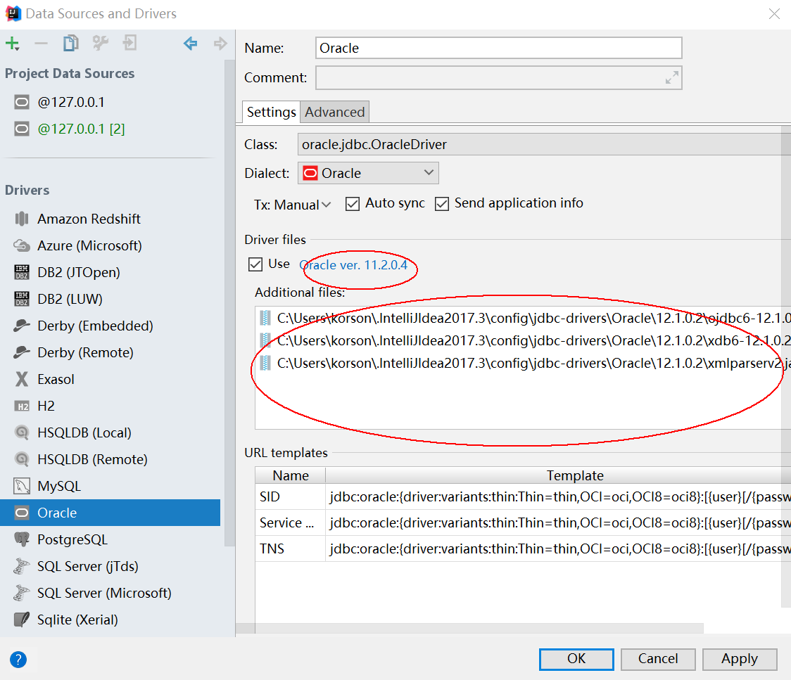
之后就可以查看我们的数据库并进行SQL操作了~
第九课. JDBC处理DML语句_2
通过在主函数中输入三个参数，完成一条插入语句：
|
|
一定要注意插入语句的写法：String sql = "insert into dept2 values (" + deptno + ",'" + dname + "','" + loc + "')";
其中由于dname和loc都是字符串，需要加单引号。
第十课. JDBC处理PreparedStatement
上面的操作过于繁琐，因为我们写一条sql语句时，还需要考虑是不是字符串，要不要加单引号。
引入一个接口：PreparedStatement
其实它的基类就是Statement。它的灵活性更强一些，可以灵活指定SQL语句中的变量。
对上一节的代码进行改进：
第十一课. JDBC处理存储过程
创建一个PLSQL过程：
对于Java怎么调用一个存储过程，下面这个代码掌握就足够了！
|
|
第十二课. JDBC进行批处理.
有两种方法可以进行批处理：
第一种是利用Statement的addBatch方法。代码如下：
第二种是利用PreparedStatement的addBatch()方法进行批处理：
结果是：
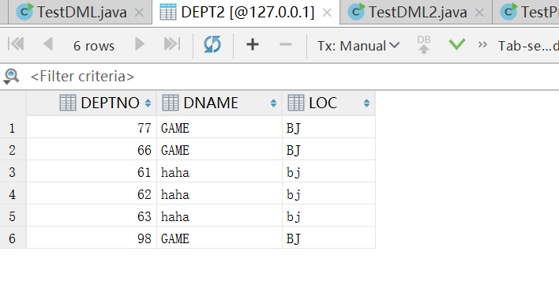
这样就把一批操作一块执行了。
第十三课. JDBC处理Transaction
|
|
上面代码中，先设置 conn.setAutoCommit(false);防止sql语句被提交，然后执行
使得sql语句可以被一起提交，达到事务的要求
第十四课. JDBC处理可滚动的结果集
代码：
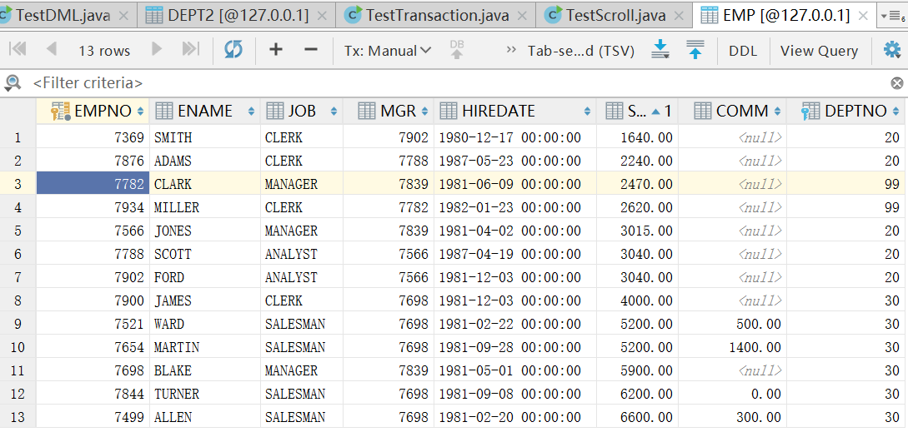
结果：
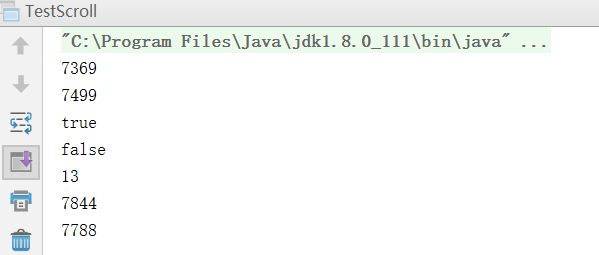
第十五课. JDBC处理可更新的结果集
代码：
运行报错：
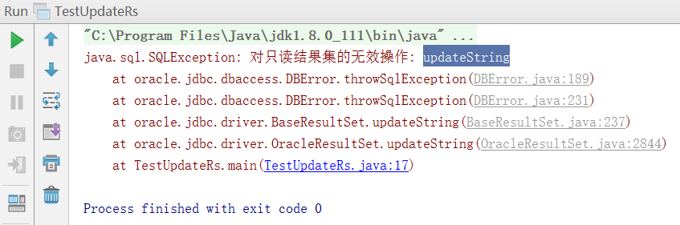
原因：虽然Sun设计了updateString，但是Oracle不支持
第十六课. DataSource_RowSet介绍和总结
DataSource & RowSet
DataSource
- DriverManager的替代
- 连接池实现
- 分布式实现
- DataSource的属性可以动态改变
RowSet
- 新的ResultSet
- 从ResultSet继承
- 支持断开的结果集
- 支持JavaBean标准
学习方法
如何掌握JDBC
- 记住常用各种类型程序段: TestJDBC.java, TestDML.java，TestPrepStmt, TestTransaction
- 将程序处理完善
（1） JDBC初步
（2） DML
（3） Transaction
（4） DataSource & RowSet